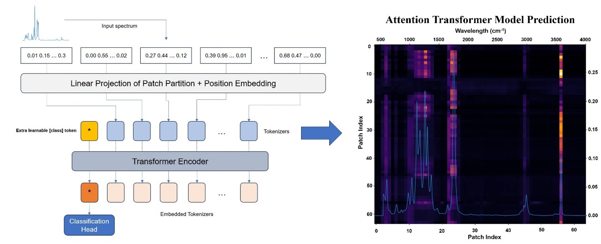
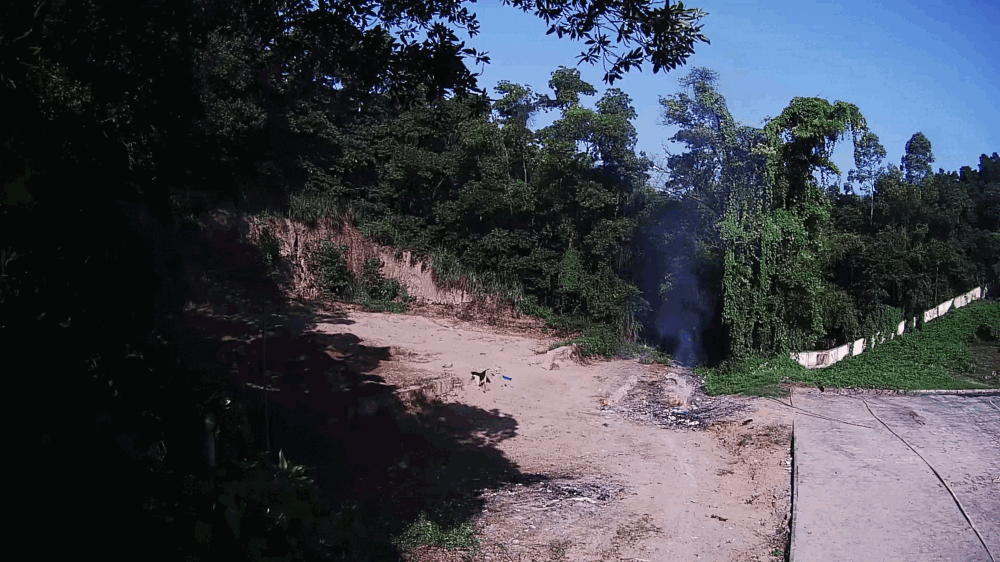

|
Cao Duong Ly I'm a senior AI researcher at Vision-in Inc in Seoul, South Korea, working on Computer Vision. (Last update: April 2025). I hold the Master Degree from Ohlabs at Pukyong National University. Prior to that, I received B.S. degrees in Biomedical Engineering from Ho Chi Minh City University of Technology (HCMUT). I am always enthusiastic about exploring new opportunities and collaborations. Feel free to reach out if you're interested in my work or would like to connect! |
News
|
ResearchI have a strong interest in Computer Vision, Medical Imaging, and Deep Learning. My research primarily centers on developing solutions for biomedical applications and tackling computer vision challenges, including tasks such as Surveillance Detection, Medical Image Segmentation or Synthetic Image Generation. A selection of my notable projects are listed below. |
|
Full-view in vivo skin and blood vessels profile segmentation in photoacoustic imaging based on deep learning
Cao Duong Ly ... Photoacoustics, 2022 Paper Deep-learning-enhanced photoacoustic imaging. |
|
|

|
Fcg-Former: Identification of Functional Groups in FTIR Spectra Using Enhanced Transformer-Based Model
... Cao Duong Ly ... Analytical Chemistry, 2024 Paper / Code / HuggingFace An open-source library dedicated to making strides in chemical signal research accessible to the wider machine-learning community. |
|
Diffusion Based Fire, Smoke Generation
Cao Duong Ly ... Vision-in, 2024 Generating synthetic images for fire, smoke detection. |

|